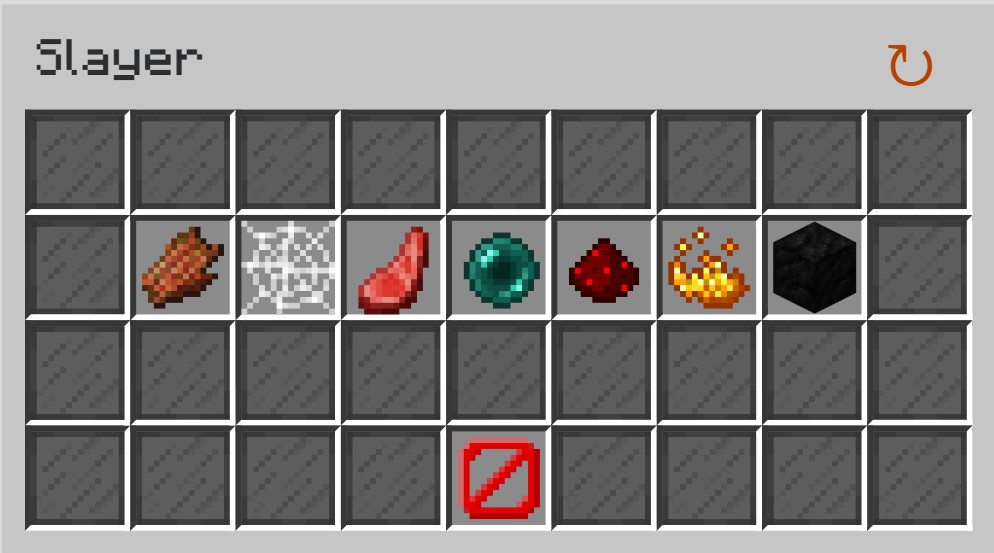

Slayers - A place to test your true profile strength, from health & defence, damage, and most importantly, skill. What we will cover today is NOT the whole of Slayers, as there as 5 in total, they have vastly differing strategies, vastly different gears, some interesting methods to defeat the boss, optimizing spawn times, and more.
What is so skillful about Slayers? What are we covering about it?
Maddox
The Boss (Abilities)
The Boss (How to do it)
This is all the 'general intricacies' as mentioned at the home page! I'll be talking about it all as breif yet detailed as I can, and then move to everything else mentioned in the home page.
Maddox
Maddox is an NPC at the basement of a bar next to the Graveyard, and he has some interesting offers for you! Maddox's whole purpose is to assign the slayer quests to activate the ablilty to spawn and kill the boss. This works by choosing which boss you want to spawn, paying a fee to start the spawning quest, killing a certain type of mob related to the boss, then spawning and killing the boss an a alotted amount of time. The boss we are tackling today will be the Inferno Demonlord, also know as Blaze Slayer, and we will being covering only the hardest variation, tier 4. The image below is the menu when you speak to the Maddox NPC, and the orange dust is the icon for the blaze slayer

The Boss (Abilities)
To start, lets format this starting with the health when spawned, the health for the different abilities to start, what those abilities are, and the passive ablities of the boss. To start, the blaze boss starts with 150 million health (you can do a maximum of 2 million damage realistically). 100 million health to get to its 1st demon phase and once out of demon phase the boss starts spawning fire pillars, then 50 million health for the 2nd demon phase and the start of DDR Apocalypse after the demon phase, and then the boss ends after it reaches 0 health.
I'll explain the abilites stated above now of:
Demon Phase(s)
Fire Pillars
DDR Apocalypse
To start, the demon phases are once the boss hits 66% and 33% of total health, and splits the boss into 2 demons, Quazii, and Typhoeus. Each have different abilities such as Quazii having a beam spinning around him, causing 75% of total health lost if you get hit by it, and healing Quazii by 25% of total health. For Typhoeus, he gets a trail of fire to follow him, dealing 60% of total health a second if touched. After getting through the Hellion Shield of one of them, they become immune and you can start attacking the Hellion Shield of the other demon until both are dead (Hellion Shield explained later). The next ability is Fire Pillars, which start at 66% of total health once the demon phase ends, where the boss throws out fire pillars that after 8 second will explode, killing you instantly. They can be countered by using a sword to give you temporary immunity to all damage, or hit them with a wisp pet equiped. The final active ability is the DDR Apocalypse at 33% of total health, which causes the boss to spawn in 5 fire pits near the player that deals 200% of your total health as true damage. To survive this, either dodge it as the fire pits take 1.5 seconds to spawn in, or get true defence to take less true damage.
Moving on to the passive abilities:
Immolate
Hellion Shield
To start, Immolate is a boss abilty to require absurd amounets of vitality (healing bonuses), as is does 100+xx% of total health as true damage. This is 20% at 100-67% health, 30% at 66-34% health, and a unslaght of 50% when at 33-0% health. The second ability, Hellion Shield it what causes the blaze slayer boss to not sucumb to 'power creep', where all items are out-classed by one superior item. It works by the boss having 4 different modes of Ashen, Spirit, Auric, and Crystal. While the Hellion Shield is up, (which is throughout the whole boss fight) you deal 99% less damage, A.K.A, its unkillable. This also applies to the demon phase, where Quazii has the modes of Spirit and Crystal, while Typhoeus has the modes Ashen and Auric. While this seems abosolutely crazy when the shield never goes down, there is a intended counter, blaze daggers. The two blaze daggers you unlock can switch to the modes crystal & spirit, and the other can swith from ashen & auric. While your daggers are attuned to the right modes, you deal 100% normal damage to the boss, countering its shield as well as those of the demons. Though this comes at the cost of tons and tons of coins for maxed out blaze slayer daggers.
The Boss (How to do it)
This is the agenda of this section:
Gear
Spawning
First third of health
Second third of health
Final third of health
To start with gear, you will need a warden helmet, 10 10 vitality magic find crimson at least fiery in upgrades, possibly a sorrow chestplate for increased true defence for the true damage the boss deals, maxed healing wand, wither impact hyperion for healing, both blaze slayer daggers maxed out, gemstones of perfect opals for true defence, and finally a 1 billion coin bank golden dragon pet.
For spawning the boss, go to the Crimson Isle, into the Smoldering Tomb at that it where you will spawn the boss. You can potentially (if you can survive the boss) get vetern 10 instead of vitality 10, sacrificing your healing for lots of combat wisdom, which will lower the amount of time it takes to spawn the boss, as killing one mob out of 100 will give 100% more xp, meaning you will spawn the boss in 50 kills.
The first third of health is just the boss without any abilities besides the passive ones, use your wand of healing and burst through the Hellion Shield with your daggers, this should end quickly with a good enough setup. To the demon phase, Quazii and Typhoeus will spawn and the Quazii will start chasing you while Typhoeus is immune to damage and wandering about. after you get through one of its attunement phases of Quazii, you can start attacking Typhoeus, and repeat until both are dead. With enough damage you can kill Quazii and Typhoeus in 1 attunement, lower the boss time to kill by a good bit. Once the boss respawns due to the death of its demons, the second phase of its health starts.
The second third of health is quite basic still, the only ability unlocked is the fire pillars, as well as the increase in damage from 100+20% health as true damage to 100+30% health as true damage. Just use your wither impact hyperion whenever you get too low on health, and as the demons spawn in. Always have your wand of healing going, as it expires every 7 seconds. You shouldn't be getting too low on health however, as the boss hasn't moved to the crazy 100+50% health as true damage yet, but if you don't do a lot of damage, fire pillars will start to spawn in, after 8 seconds of one spawning in, it will explode and kill you instantly. whenever it reaches 1 second left, swap to a wither cloak sword, use the ability, and de-activate it once the fire pillar is gone. This will negate the damage of the fire pillar and allow you to continue attacking it. The demon phase is the same as last time. After killing the demons, the boss will spawn again for the last time, leading into the last phase.
The final third of health is the hardest to survive, its just pure damage vs. pure survivablity. The boss has amped its damage for 100+30% to 100+50% health as true damage. The inclusion of the DDR Apocalypse makes it so you have to be careful when damaging the boss, as if a fire pit spawns and you aren't aware, its a nearly guaranteed death. After bursting through the last of this health with your daggers, you have finally completed the boss in (best case) 40 seconds to (ok setup) 1 minute 40 seconds.
Now you just pray for drops, but as the drop chance of items has a base increasable by magic find (which is something we have on our armor), we have a decent chance to get at least a semi-decent drop (30%ish) and about a 3-5% chance to drop something worth 50 million coins and just generally good items with pretty good magic find.
Introduction
The introduction to blaze isn't all that great, the Smoldering Tomb is hidden, the blazes start with millions of health, the tier 1 has a vast amount of true damage able to annihilate any newer players. Though, it is possible with very minimal gear to do tier 1 and tier 2.
Early-game Progression
The Early-game progression assumes that you are already good enough to get to the Crimson Isles, which already has pretty high requirements, but for blaze, your tier 1 setup can be a 10 million, tier 2 can probably go to 20 million coins. quite terrible.
End-game setup(s)
The end-game setup for this as mentioned before is a warden helmet, 3/4 pieces 15 starred crimson armor 10 10 vetern magic find, all tier 4 blaze daggers, a hyperion for healing, a SOS flare for more vitality, 1 billion bank golden dragon, and more for around 15 billion coins. but a good enough set up can get the crimson armor to fiery instead, get a sorrow chestplate, and an ender dragon pet, with not hypermaxed blaze daggers for around 5 billion coins for enough to do blaze.
MONEY!!!
Blaze slayer only makes money in the endgame, everything from tier 1, 2, and 3 are just build up to the tier 4 boss, where you make around 40+ million coins an hour. This isn't the best rates, but you have to consider that geting 1 million blaze slayer xp is required to max out the game. And since you get 500 slayer xp from each tier 4 boss, its mostly just billions of extra coins for just maxing out the slayer at level 9.
Time dedication
Blaze slayer, like Kuudra, mostly has a 'throw money at it' problem, where the progression is getting money, but to unlock the maxed out daggers, you still need a good blaze slayer level, which might take 10 hours of gameplay max, but grinding to blaze slayer 9, while not needed, will make tons of money for a lot of skyblock xp. It might take 100+ hours though, but its better than the Garden for skyblock xp while being the much more fun and less hours.
The overall rating
7/10! If you want to make money off of something in the Crimson Isles, go the Kuudra, mini-boss farming, mycelium mining, or anything else, but if you are going for Skyblock xp, this is needed, makes great money an hour, and overall will get you multiple billions of coins. The reason this is rated much more mid is because the early-game, progression, and starting money off this slayer is atrocious, making it quite bad earlier in the game, but the Crimson Isle isn't based on the early-game because its requirements are already so high, but as an end-game player, this is a crazy fun and optimizable slayer, with awesome perks to follow.
This site... IS DONE. bai
Go to the next topic of... wait... there isn't a next site... welp. just go back to the home page and to the bottom then.